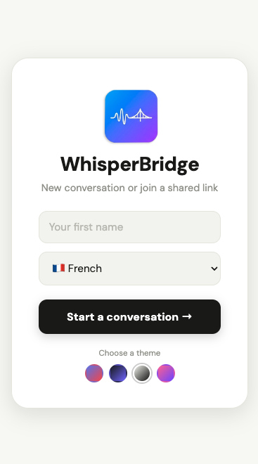
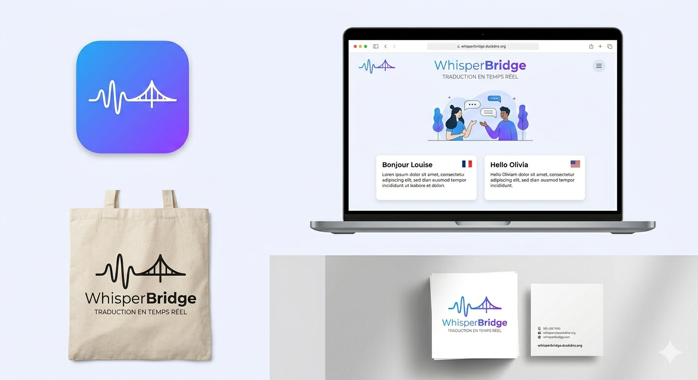

Aperçu de l'application
Découvrez WhisperBridge en action



WhisperBridge — traduction vocale en temps réel
WhisperBridge traduit vos paroles en temps réel. Aucune installation, aucun compte, aucune donnée envoyée à l'extérieur.

Propulsé par Whisper d'OpenAI. Parlez naturellement — WhisperBridge s'occupe du reste.
Français, anglais, espagnol, italien, portugais, mandarin, arabe, russe. Traduction 100% locale.
Chaque conversation génère un lien unique. Partagez-le — personne d'autre ne peut rejoindre.
Détection automatique de la voix. Pas besoin de maintenir un bouton — parlez naturellement.
Les traductions sont lues à voix haute automatiquement. Idéal quand vous ne pouvez pas regarder l'écran.
Aucune donnée audio envoyée à Google, OpenAI ou autre. Tout tourne sur votre machine.
Découvrez WhisperBridge en action

WhisperBridge — traduction vocale en temps réel
Accédez à whisperbridge.duckdns.org ou hébergez-le vous-même.
Entrez votre prénom, choisissez votre langue. Un lien unique est généré.
Envoyez le lien à votre interlocuteur. Il rejoint en un clic.
Chacun parle dans sa langue. La traduction s'affiche et se lit en temps réel.
WhisperBridge est open source. Hébergez votre propre instance en quelques minutes.
git clone https://github.com/mcdesmonteix/whisperbridge.git
cd whisperbridge
./setup.sh